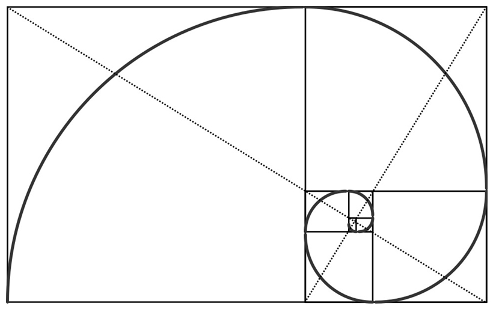

Fibonacci Day
21 Novembre 2025 - 4G

Fibonacci, celebre matematico pisano nato a Pisa, è ricordato soprattutto per la sequenza che porta il suo nome, una successione in cui ogni numero è ricorrente, cioè si ottiene sommando i due precedenti. La sequenza compare per la prima volta nel suo importante libro, il Liber Abaci, in cui Fibonacci presenta anche un famoso problema legato alla crescita dei conigli, l'animale che utilizza per spiegare la progressione.
Il padre di Fibonacci, membro della società mercantile Gherardi, ebbe un ruolo fondamentale nella sua formazione, accompagnandolo nei viaggi attraverso il Mediterraneo. Proprio grazie a questi viaggi, Fibonacci poté studiare da vicino il sistema numerico arabo, che poi contribuì a diffondere in Europa.
La sequenza di Fibonacci non è solo un concetto matematico astratto: si ritrova in molte forme naturali, come la spirale delle conchiglie, e ha un legame profondo con la proporzione aurea, spesso indicata con il simbolo phi. Questa proporzione, considerata armoniosa e piacevole, è collegata alla spirale aurea che deriva proprio dalla successione. Curiosamente, la sequenza di Fibonacci trova applicazioni anche in campi inaspettati, come la borsa, dove viene talvolta usata per analizzare pattern di crescita esponenziale.
La sequenza comincia con lo zero, un numero fondamentale che da avvio a un viaggio affascinante tra matematica, natura e storia.